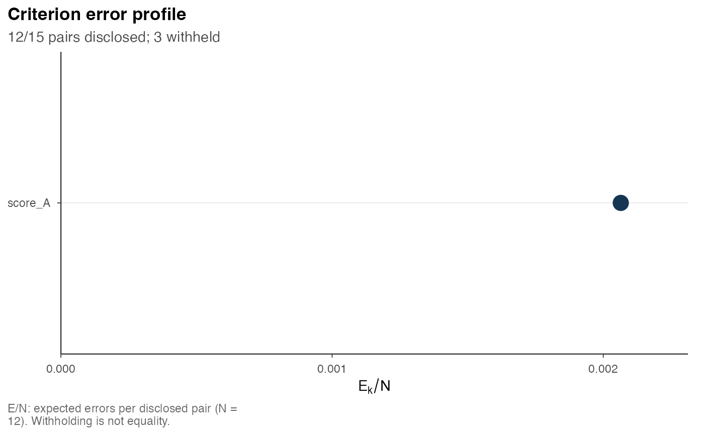
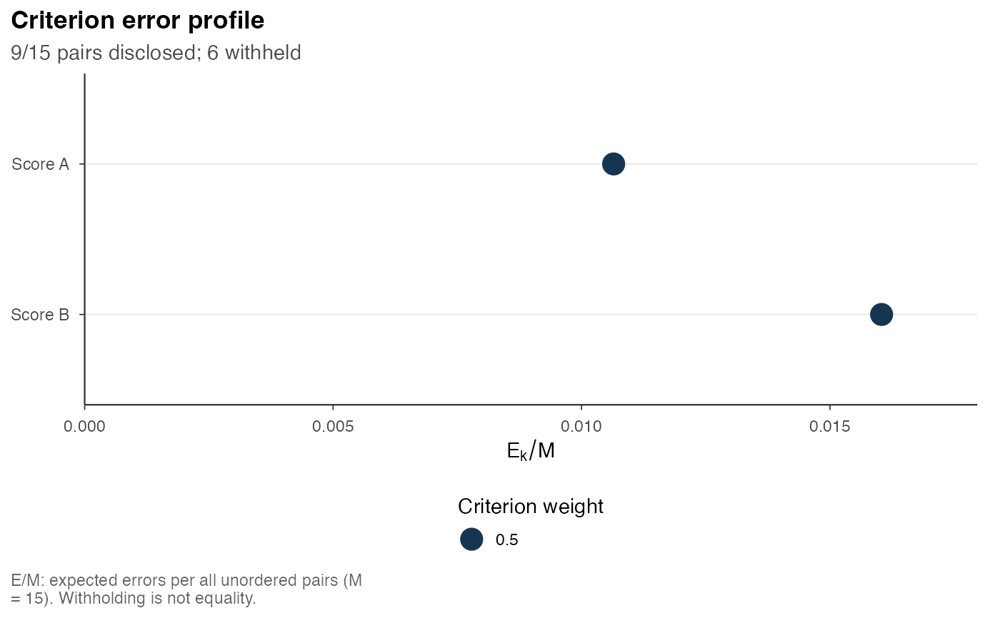

Plot Criterion-Wise Error Rates or Risk
postrank_plot_profile.Rdpostrank_plot_profile() plots the posterior expected directional-error rate
or criterion risk for each criterion in a stored grading, with one row per
criterion. In plot text and tables, disclosed means pairs placed in
different grades (ordered), withheld means pairs placed in the same grade
(left unordered), and risk means posterior expected loss.
Usage
postrank_plot_profile(
x,
show = c("E_over_N", "E_over_M", "risk"),
budgets = TRUE,
...,
criterion_labels = NULL
)Arguments
- x
A
postrank_fitorpostrank_analysiswith a stored evaluation.- show
Metric drawn on the horizontal axis:
"E_over_N"(the default) for expected wrong-direction errors per disclosed pair (E_k / N),"E_over_M"for expected wrong-direction errors per unordered pair (E_k / M), or"risk"for criterion riskR_k(including the withholding costtauon withheld pairs).- budgets
Logical scalar (
TRUEby default). WhenTRUEandshow = "E_over_N", draws a vertical tick at each declared error budgetq_kand connects it to that criterion's point.- ...
Unused; unnamed extra arguments are ignored. Pass
criterion_labelsby name.- criterion_labels
Optional named character vector mapping raw criterion IDs to display labels. Unmapped IDs keep their raw IDs, and labels are wrapped to 22 characters per line; underlying IDs and numeric values in
$dataare unchanged.
Value
A ggplot object whose $data table matches get_profile() with an
added value column for the selected show metric. If x has no checked
grading, returns an empty status ggplot stating why. When
show = "E_over_N" and N = 0 (every pair is withheld), returns a blank
[0, 1] panel stating that E/N is undefined rather than plotting zero.
Details
E_k is the posterior expected number of wrong-direction comparisons on
criterion k, N is the number of disclosed pairs, and M = choose(n, 2)
is the number of unordered entity pairs. Points for positive-weight criteria
scale in area with weight (the size legend is omitted when there is only
one criterion); zero-weight criteria with finite values appear as small
hollow circles.
When show = "risk", a vertical dashed line marks tau, the risk of placing
all entities in a single shared grade. When the problem uses
objective = "minimax", orange rings mark criteria attaining the maximum
criterion risk (is_minimax_max). Horizontal axes always start at zero. The
function reads stored evaluation summaries without solving or recomputing
risks.
Examples
one <- postrank_example("tutorial_one")
postrank_plot_profile(one)

Open full-size figure
two <- postrank_example("tutorial_two")
postrank_plot_profile(
two,
show = "E_over_M",
criterion_labels = c(score_A = "Score A", score_B = "Score B")
)

Open full-size figure